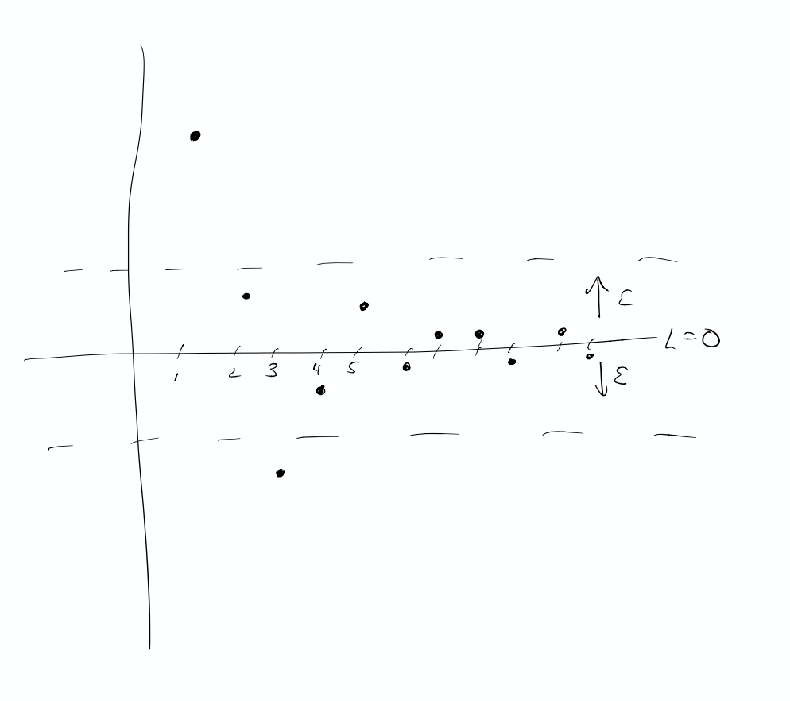

Oct 21-25
Definition: An (infinite) sequence with rational coefficients is a function \(a:\mathbb{P}\to\mathbb{Q}\). Normally we view it as the sequence \(a(1),a(2),\ldots\).
Some examples:
We would like to have a way to speak about what happens to sequences as \(n\) gets larger and larger (so for example the sequence grows, it bounces around, or it approaches a particular number.)
Definition: Let \(a(n)\) be a sequence. Then we say that the limit of \(a(n)\) is \(L\) if, for every \(\epsilon>0\), there is an integer \(N\), so that \(|a(n)-L|<\epsilon\) for all \(n\ge N\). This is written:
\[ \lim_{n\to\infty} a(n)=L. \]
and we say that the sequence converges to \(L\). 
Examples
Proposition: Let \(a(n)\) be a sequence and let \(b(n)\) be the sequence defined by \(b(n)=a(n+5)\). (so \(b(n)\) is the same as \(a(n)\) but it “starts later.”) Prove that \(a(n)\) converges if and only if \(b(n)\) converges.